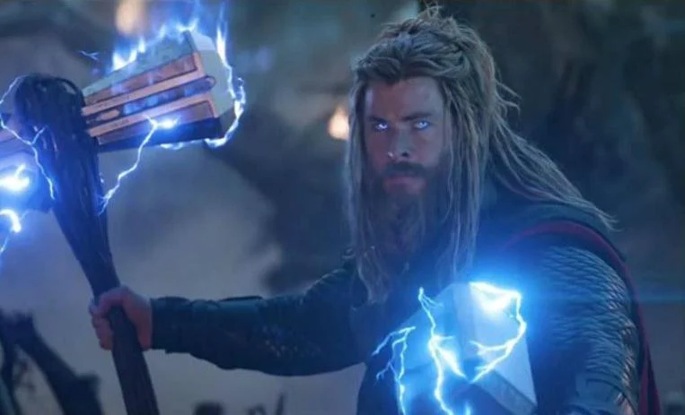
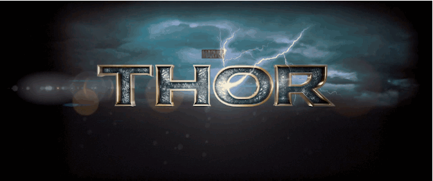
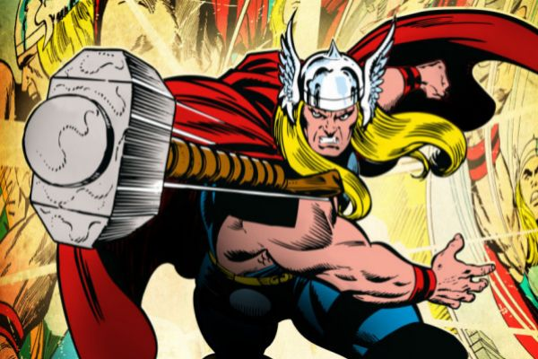
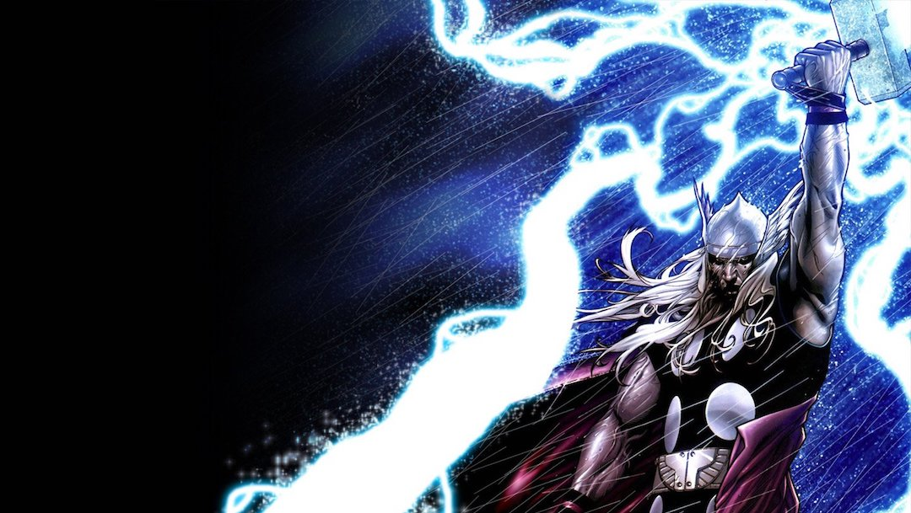
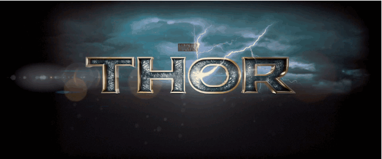
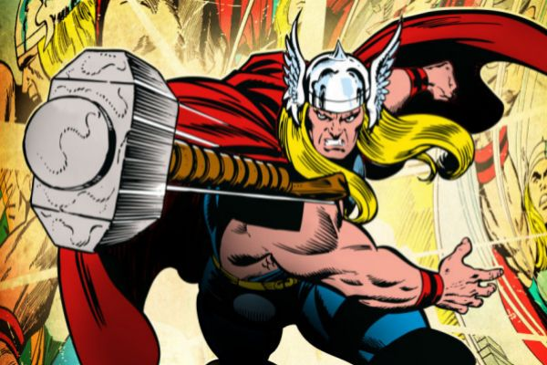
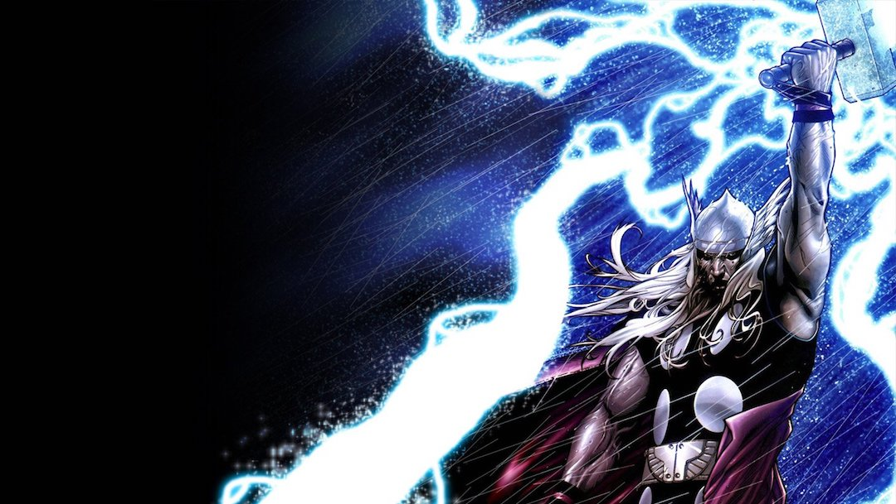

Thor
 





Thor Odinson
¿Quién es?
Thor es un superhéroe ficticio que aparece en los cómics estadounidenses publicados por Marvel Comics. El personaje, que se basa en la deidad nórdica del mismo nombre, es el dios del trueno asgardiano poseedor del martillo encantado, Mjolnir, que le otorga la capacidad de volar y manipular el clima entre sus otros atributos sobrehumanos. 1 Debutando en la Edad de Plata de los Libros de Cómics, el personaje apareció por primera vez en Journey into Mystery # 83 (agosto de 1962) y fue creado por el dibujante Jack Kirby, el editor Stan Lee y el guionista Larry Lieber. Ha protagonizado varias series en curso y series limitadas, y es miembro fundador del equipo de superhéroes, Los Vengadores, apareciendo en diferentes números de esa serie. El personaje también ha en diversos productos de Marvel, incluidas series de televisión animadas, películas, videojuegos, ropa, juguetes y tarjetas de intercambio.
Thor Odinson es el Dios del Trueno, anterior Rey de Nuevo Asgard y miembro fundador de los Vengadores. Cuando su conducta irresponsable amenazó a los Asgardianos a entrar en otra guerra con los Gigantes de Hielo, fue despojado de su poder y desterrado en la Tierra por su padre, Odín. Mientras estaba exiliado, Thor aprendió sobre la humildad, encontró el amor en Jane Foster y ayudó a salvar a sus nuevos amigos del Destructor, quien fue enviado por su celoso hermano adoptivo, Loki. Como tal, Thor se remidió ante los ojos de su padre, se le concedió el acceso a su poder una vez más y regresó a Asgard para confrontar a Loki, quien cayó al vacío cuando Thor destruyó el Puente Arcoíris para impedir la destrucción de Jotunheim. Thor fue recibido como un héroe en Asgard, pero se vio obligado a regresar a la Tierra para capturar a Loki, quien amenazaba con dominar dicho mundo y tenía en su poder el Teseracto. Thor se unió a los Vengadores bajo la dirección de S.H.I.E.L.D. y se comprometieron a detener a su hermano adoptivo. Tras participar en la Batalla de Nueva York, Loki fue derrotado por los Vengadores, y fue devuelto a Asgard por Thor para ser condenado por sus crímenes. Con el Teseracto, los Asgardianos reconstruyeron el Puente Arcoíris y, a causa de su ausencia, Thor armó un ejército para devolver la paz a los Nueve Mundos en la Guerra de los Nueve Mundos